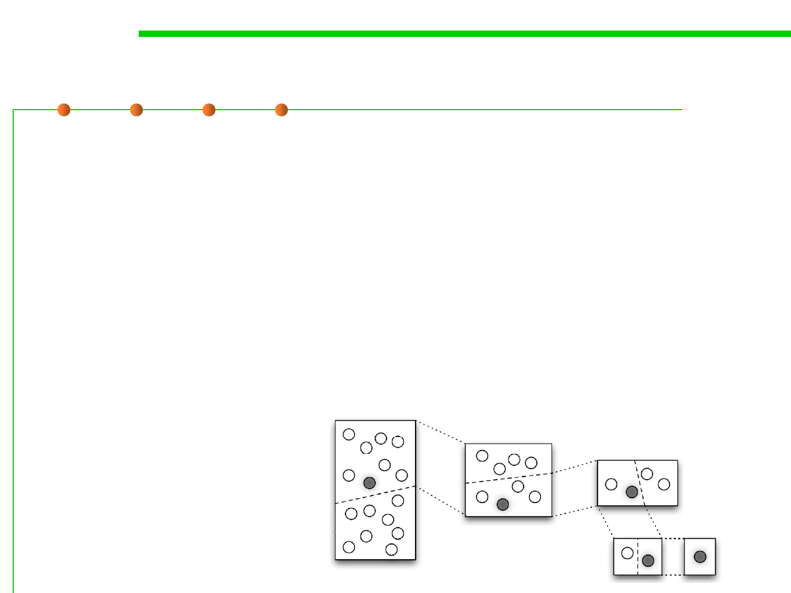

7.4 Debugging
Diagnosis stratagem 2: Divide and Conquer 分治
▪ Divide and conquer, or binary chop / search, is a search strategy.
– It is the Swiss Army knife of debugging—it crops up again and again in a
wide variety of situations.
– It can provide you with a quick and easy way to exclude a large number of
candidates.
– E.g., perhaps your software contains a number of modules that can be
enabled and disabled independently? If so, try disabling them all and see
whether the bug still occurs. If it does, then you’ve eliminated a lot of code
that you won’t need to examine (and won’t confuse matters). If it doesn’t,
then you can quickly identify the problem module by enabling half and
rerunning your test.